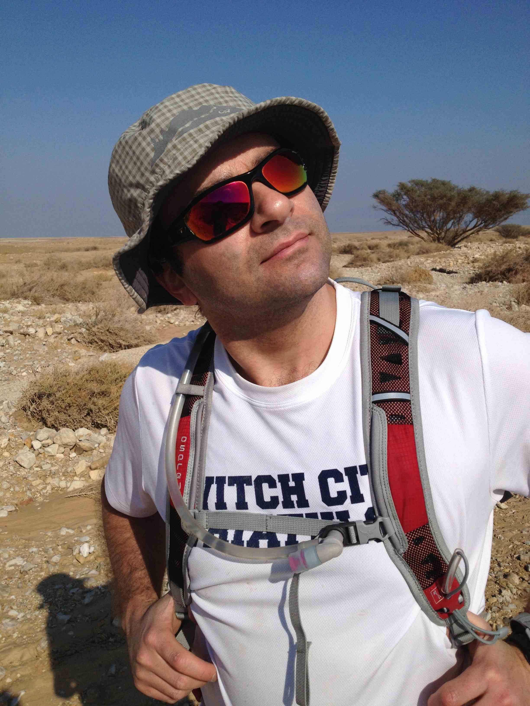

---
---
<div id="container">
  {% include header.html %}
  <div id="content">
    <h2>
      About me </h2>
    <p>
      <table>
	<tr>
	  <td>
	    
	  </td>
	  <td valign="top">
	    <p>
	      <font size="4">My research focuses on epigenomic
	      mechanisms, and merges basic biology, technological
	      innovations and computational analyses. My major
	      interest is in <b>developmental-epigenomic</b> questions, and
	      includes the employment and development of tools to
	      study chromatin in uncharted settings, such as
	      investigating the organization of chromatin regulatory
	      networks during mouse embryogenesis. My background
	      combines epigenomics and chromatin biology, molecular
	      biology, biotechnological innovations and computational
	      analyses. 
	    </p>
	    <p>
	      Currently, I am building my group at UCSD Medical School
	      which will focus on characterizing the dynamics and
	      roles of Chromatin Regulators (CRs) and other components
	      of epigenetic regulatory circuits in governing mammalian
	      early development. Specifically, we will leverage
	      technological innovations to investigate mechanisms such
	      as crosstalk between CRs and transcription factors for
	      recruitment of CRs to specific genomic loci and the role
	      they play in cellular fate decisions. Further, we will
	      study the relevance of <i>in vitro</i> model systems and
	      discrepancies with <i>in vivo</i> epigenetic programs.
	    </p>
	    <p>
	      In addition to my research goals, I firmly believe that communicating and disseminating of
	      knowledge is a major component of science, and I am
	      involved in mentoring students, presentations of
	      webinars
	      (e.g. <a href="http://bit.ly/189tG2I">Chromatin/ChIP-seq</a>),
	      outreach programs and workshops
	      (e.g. <a href="http://www.broadinstitute.org/~agoren/2014-BroadE/BroadE-2014_Epigenomics.pdf">2014-BroadE</a>).
	    </p>
	    <p>
	    </font>
    </p>
    <p>
      <font size="3">
	<b>Contact:</b> agoren AT broadinstitute DOT org
	<br>
	<b>Twitter:</b> alon_goren
	<br>
	<b><a href="http://bit.ly/1KnJHYy">Biographical Sketch</a></b>
      </font>
    </p>
</td>
</tr>
</table>
</div>
{% include footer.html %}
</div>
